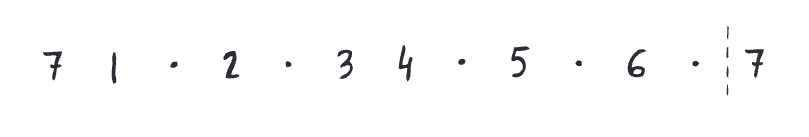

7th harmonic env
meditative

key of A (note 7 = G#)
key of Ab (note 7 = G)
key of B (note 7 = A#)
key of Bb (note 7 = A)
key of C (note 7 = B)
key of D (note 7 = C#)
key of Db (note 7 = C)
key of E (note 7 = D#)
key of Eb (note 7 = D)
key of F (note 7 = E)
key of G (note 7 = F#)
key of Gb (note 7 = F)